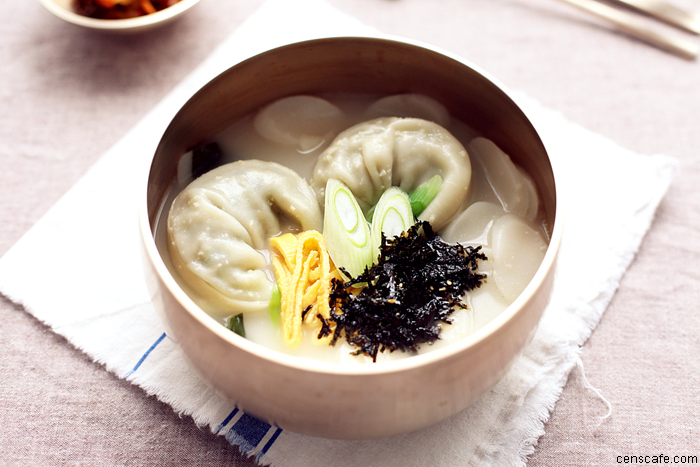

Mandu-guk(also called Dumpling soup) is a soup made by Mul-mandu in a beef broth or anchovy broth mixed with beaten egg. Some variations make the broth from beef stock. The addition of tteok, a cylindrical rice cake, is common as well, changing the dish's name into Tteok-mandu-guk.